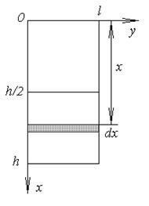

Прямоугольный сосуд наполнен равными по объему частями воды и
масла, причем масло вдвое легче воды. Показать, что сила давления на каждую
стенку сосуда уменьшится на одну пятую, если вместо смеси взять одно масло.
РЕШЕНИЕ:

Удельный вес воды , удельный вес
масла .
Сила давления масла на верхнюю половину стенки: .
Давление на глубине складывается
из давления столба масла высотой и столба воды высотой
:
, .
Полное давление смеси на стенку:.
Если сосуд наполнить только маслом: ,
.